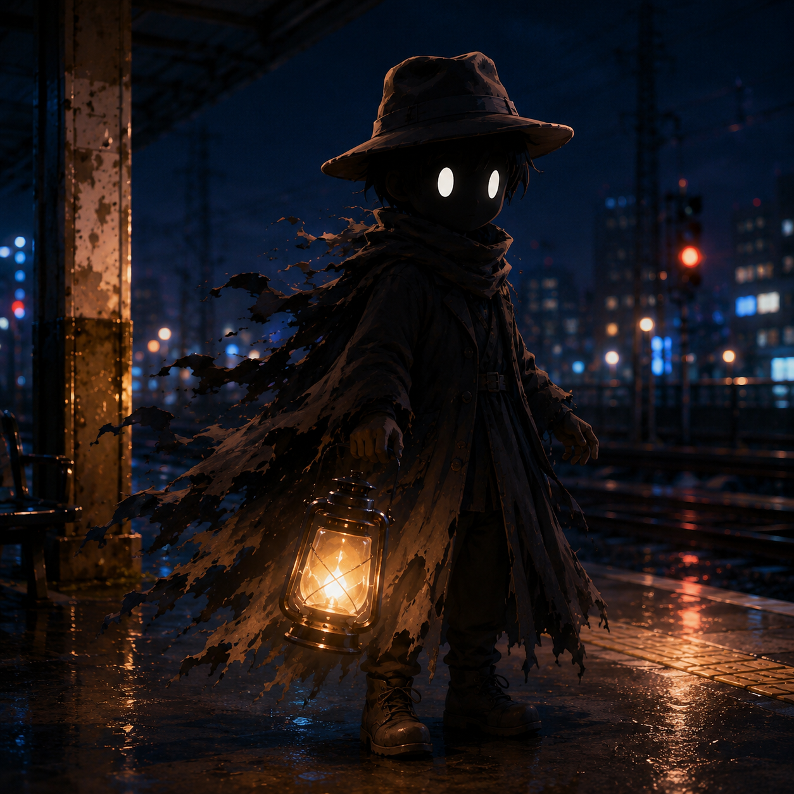
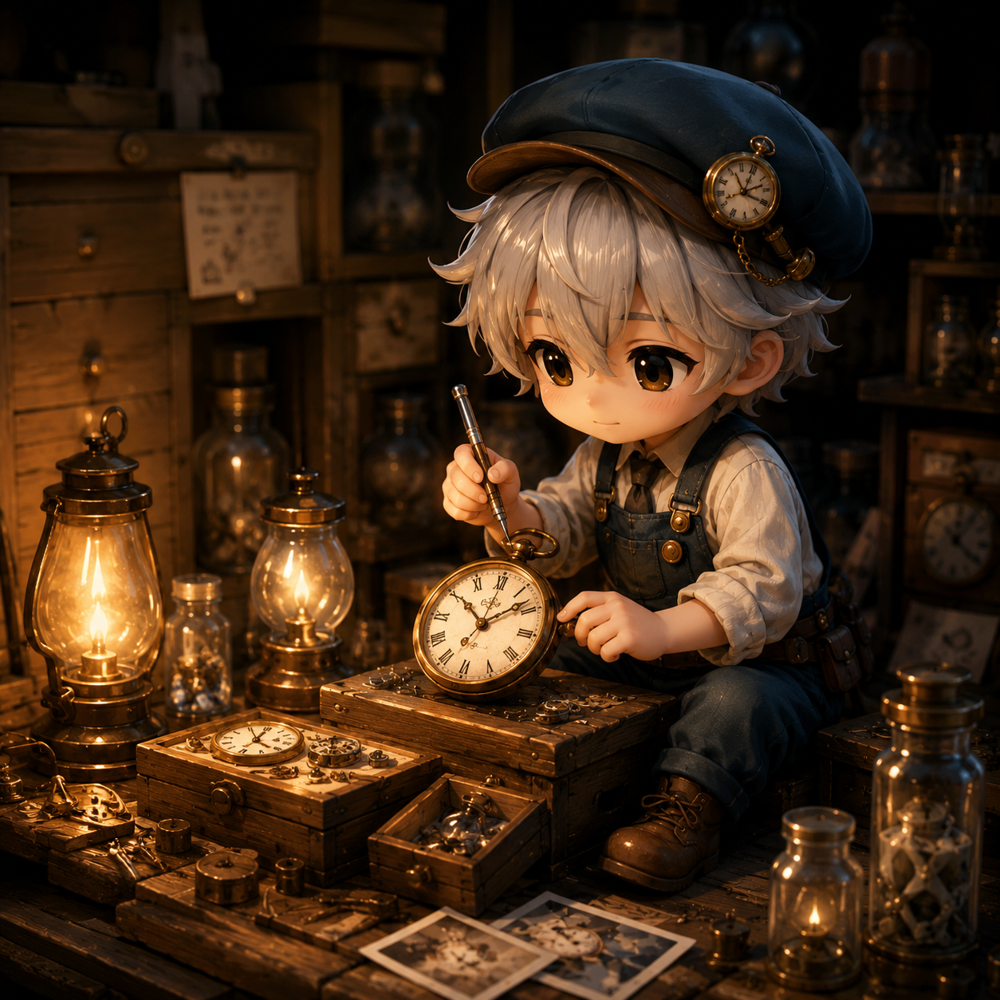
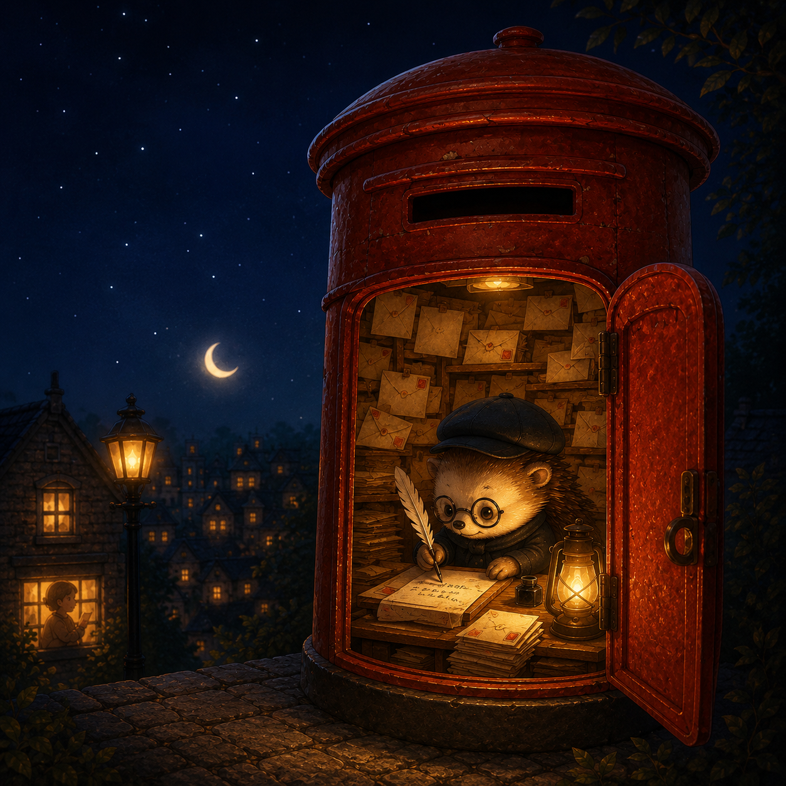
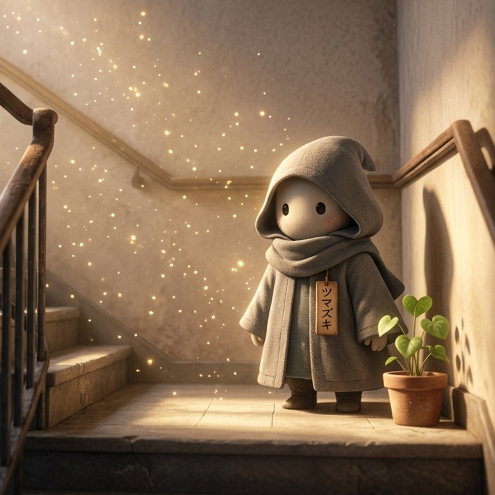
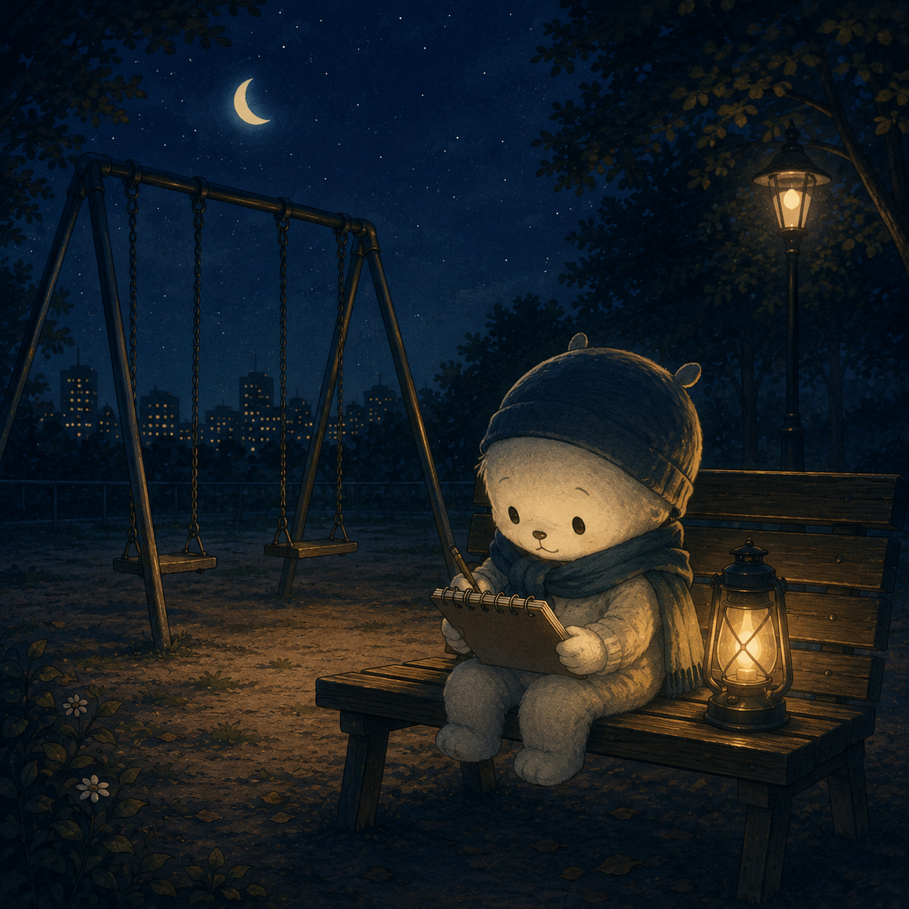
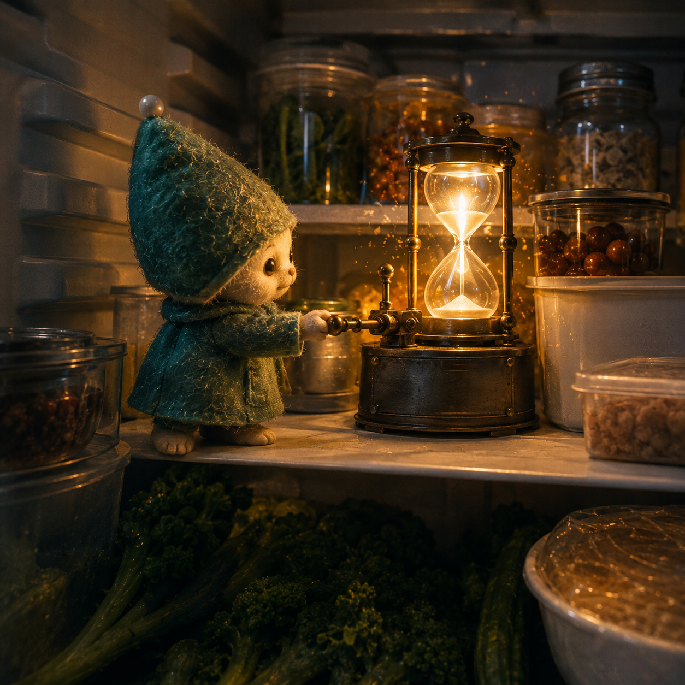
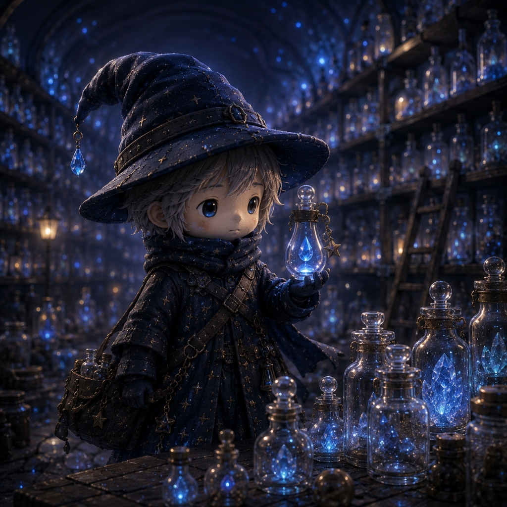

第1話の隣人
ススノミ換気口の奥の小さな台所
📍 古びたアパートの換気口の奥にある小さな台所
「なんだか今日は、懐かしい気分だな」
TOKOYOMACHI ROOM TOUR
見えない隣人たちは、人の目につかない小さな場所で暮らしています。
これは、その部屋をそっとのぞくための地図。気になる隣人の部屋から、どうぞ。
部屋のページでは、カメラがゆっくり部屋をめぐります（約70〜98秒のループ）。
横 16:9 / 縦 9:16 の切り替えつき。字幕でご案内します。
各部屋には、その隣人の曲（インストゥルメンタル版）のBGMがあります。「♪ BGM」ボタンで再生できます。
📖 隣人図鑑では、13人全員に3Dで会えます。
第1話の隣人
📍 古びたアパートの換気口の奥にある小さな台所
「なんだか今日は、懐かしい気分だな」

第2話の隣人
📍 終電が終わった後の誰もいない駅のホーム
「それでいい、とカゲミチは思う。」

第3話の隣人
📍 どの家の押し入れの奥にもある、ほんのわずかな「隙間」
「それは偶然ではない。トキツギが、静かに仕事をした証だ。」
第4話の隣人
📍 夜の街灯の下
「そこには、昔の自分の夢が書いてあった。」
第5話の隣人
📍 真冬の夜の自動販売機の裏側（小さな湯気の立つ場所）
「今日は、なんだか凍えないな」

第6話の隣人
📍 赤い郵便ポストの底
「相手は何も聞いていないのに、なぜか理解してくれる。」

第7話の隣人
📍 駅やアパートの階段の踊り場
「つまずきそうになって踏みとどまる。それは偶然ではない。」

第8話の隣人
📍 夜の公園の誰もいない揺れるブランコ
「誰にも褒められなかった日でも、その頑張りは消えていない。」

第9話の隣人
📍 家庭の冷蔵庫の最奥にある小さな氷の小棚
「“腐りそうな時間”を、ほんの少しだけ延ばしている。」
第10話の隣人
📍 夜の屋根の上・煙突の周辺
「それは、空の偶然ではない。」
第11話の隣人
📍 常世町の西の丘の上にある大きな温室「夢の保管庫」
「夢には賞味期限がないから。「おかえり」」

第12話の隣人
📍 常世町の地下「涙蔵（なみだぐら）」
「悲しみは、いつか輝きになる。それを知っているから。」
第13話の隣人
📍 夜明け前の空・常世町の東門
「明日は希望そのものじゃない。でも、希望を運ぶことはできる。」